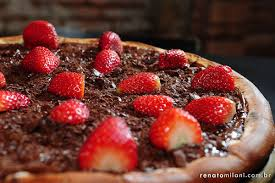
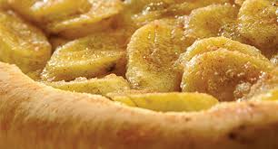

Baking Desert Pizza
You can surprise with a Desert Pizza.
Nutella and Strawberry
- 5 tbsp of Nutella
- 1 punnet of strawberries
- 1 tbsp icing sugar
- 1 tbsp butter or olive oi
- Note: tbsp - table spoon
How to do it:
- Pre-heat oven to 220°C.
- Brush a pizza tray with olive oil.
- Make one quantity of pizza dough. Roll out to fit a tray and prick surface all over with a fork.
- Brush with olive oil or butter and bake for approx.10 mins or until golden.
- While warm spread with Nutella generously and top with fresh strawberries.
- Sprinkle sifted icing sugar of the top and slice while warm.
Banana Pizza
- 1/4 stick (2 tbs) unsalted butter butter
- 1/4 cup sugar
- 3 bananas
- 1 1/2 tsp cinnamon
- 1/2 cup powdered sugar
- 1-2 tsp milk
- 1/4 tsp vanilla
- Note: tbsp - table spoon
How to do it:
- Cut up three bananas in thick rounds and spread them over the dough.
- In a separate bowl, combine the sugar, brown sugar and butter.
- Using a fork to combine the ingredients until the butter is chopped up and pea sized.
- Sprinkle over the top of the bananas. It will melt and cover the bananas perfectly. Add the cinnamon and blend again.
- Bake the pizza. When the sugar is melted and the crust is golden brown it is perfectly cooked.
- Remove from the oven and let cool for 5 minutes.
- While the pizza is cooling mix up the icing by combining the powdered sugar, milk and vanilla.
- The amount of milk will vary but make sure your icing is rather thick as it will melt under the heat of the pizza.
- Drizzle the icing over the pizza and serve